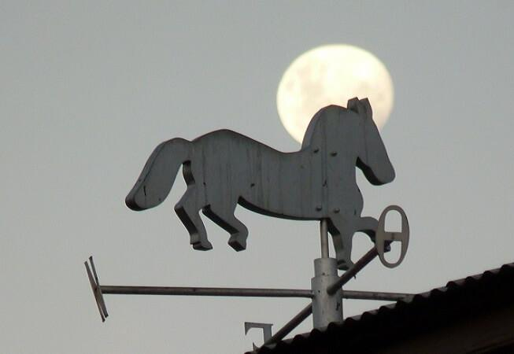
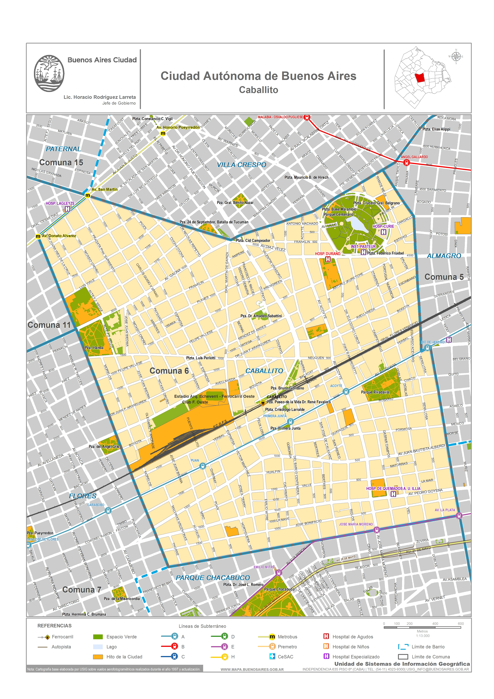

Este barrio se encuentra en el medio de la Ciudad de Buenos Aires. Debe su nombre a la pulpería que en 1821 instaló don Nicolás Vila en la esquina de las actuales calles Rivadavia y Emilio Mitre, que era reconocida por su típica veleta en forma de caballito.

Barrio de Caballito
Limites del barrio

Origen del barrio:
El barrio debe su nombre a la pulpería que en 1821 instaló don Nicolás Vila en la esquina de las actuales Rivadavia y Emilio Mitre, y que era reconocida por su típica veleta en forma de caballito. Como todos los barrios del oeste, también éste progresó en forma notable con la llegada del ferrocarril, que desde 1857 atravesó el barrio adoptando el nombre de la famosa pulpería para su estación en el lugar.
Desarrollo del barrio
Zona de lujosas quintas a lo largo de la actual avenida Rivadavia, era para los porteños un lugar de fin de semana. Precisamente de una de esas quintas, la de Ambrosio Plácido Lezica, nace en 1928 el parque Rivadavia. El tranvía y más tarde el subterráneo, contribuirán y en mucho al desarrollo de este barrio, hoy en día uno de los más residenciales de Buenos Aires, y en cuyo interior se encuentra localizado el centro geográfico de nuestra ciudad.
Homenaje a la veleta de caballito
En la plaza Primera Junta, una réplica de la tradicional veleta del caballito nos retrotrae a aquellos tiempos en que el barrio era el descanso obligado antes de ingresar a Buenos Aires.
Contacto
Ubicacion: Caballito CABA
Redes Sociales: @fulboestadisticas